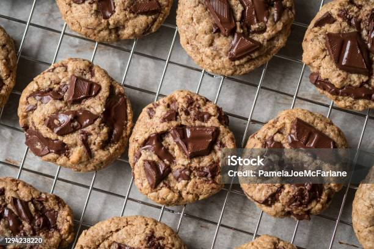

home
chocolate chip cookies

my tried and true chocolate chip cookie recipe. my favorite way to elevate this recipe further is to skip the chocolate chips, and instead grab a couple of high quality chocolate bars. i like to do a mix of both milk and dark chocolate.
ingredients
- 2 cups brown sugar
- 1 stick cold butter, cubed
- 2 eggs
- 1 1/2 tsp vanilla extract
- 2 1/2 cups flour
- 1/2 tsp salt
- 1 heaping tsp baking soda
- 8 oz chocolate
steps
- preheat oven to 375 degrees F
- combine brown sugar and butter using a hand mixer until there are no lumps of butter
- add in eggs and mix until creamed
- add vanilla, salt, and baking soda and Combine
- carefully mix in the flour 1/2 cup at a time (be careful not to overmix)
- fold in chocolate chunks
- bake for 10-12 minutes and allow to cool for at least 20 minutes